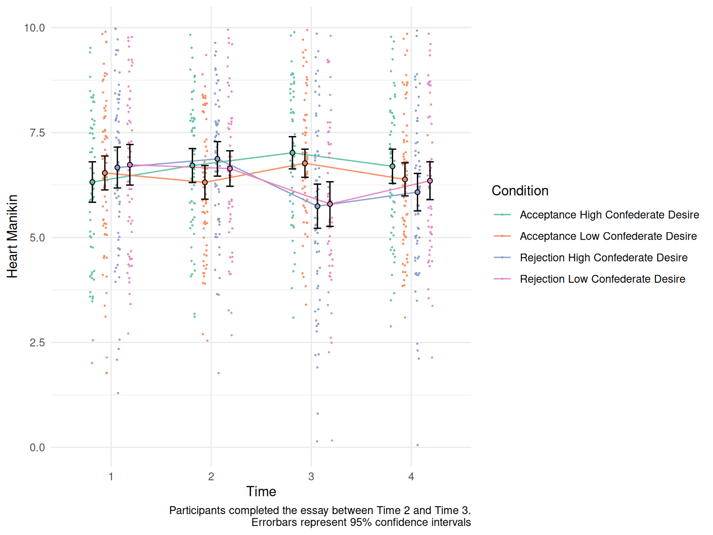
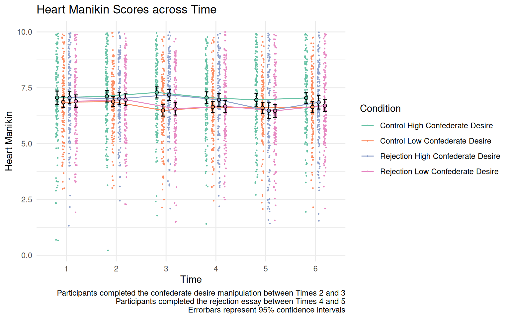
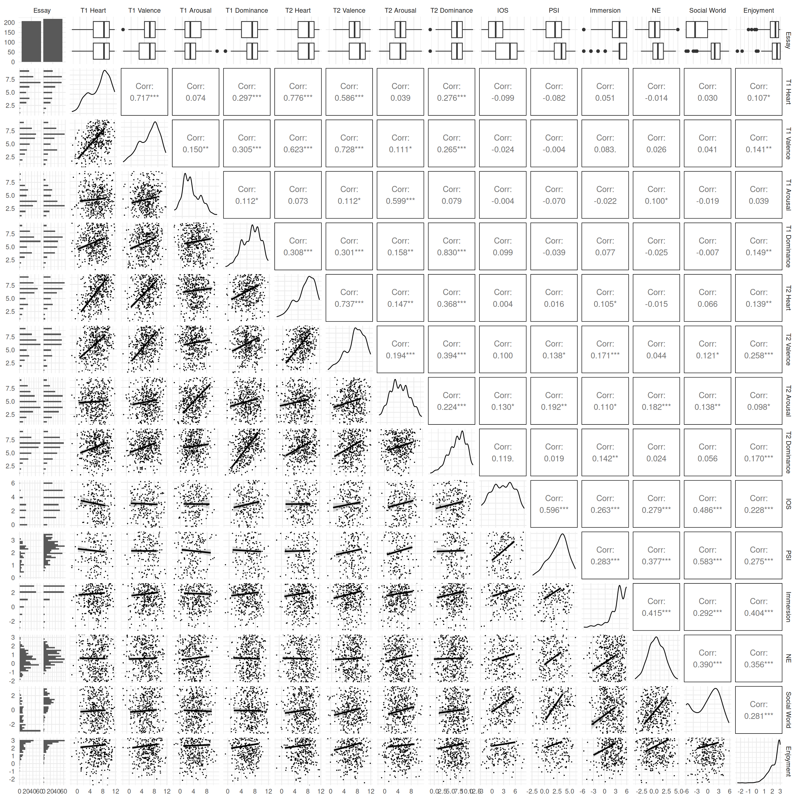

| Variable | $n$ | $M$ | $SD$ | 1 | 2 | 3 | 4 | 5 | 6 | 7 | 8 | 9 | 10 | 11 | 12 | 13 |
|---|---|---|---|---|---|---|---|---|---|---|---|---|---|---|---|---|
| 1. Heart | 571 | 6.30 | 1.93 | |||||||||||||
| 2. Valence | 571 | 6.33 | 1.65 | .71* | ||||||||||||
| 3. CESD | 571 | 17.15 | 10.41 | -.58* | -.67* | |||||||||||
| 4. Isolation | 566 | 2.20 | 0.89 | -.60* | -.60* | .71* | ||||||||||
| 5. Biological Beliefs | 570 | 2.33 | 0.95 | -.11* | -.08* | .12* | .14* | |||||||||
| 6. Reactivity | 569 | 2.33 | 0.42 | .01 | .00 | .10* | .10* | .03 | ||||||||
| 7. Perspective | 570 | 2.48 | 0.59 | .00 | -.03 | .05 | .04 | -.01 | .71* | |||||||
| 8. Fantasy | 570 | 2.40 | 0.75 | -.03 | .01 | .07 | .08* | .05 | .71* | .30* | ||||||
| 9. Empathy | 569 | 2.74 | 0.66 | .16* | .11* | -.05 | -.07 | -.07 | .77* | .50* | .41* | |||||
| 10. Distress | 569 | 1.55 | 0.66 | -.12* | -.10* | .20* | .22* | .11* | .27* | -.09* | -.06 | -.03 | ||||
| 11. Monitoring | 572 | 12.19 | 3.62 | -.09* | -.09* | .20* | .12* | .06 | .08 | .02 | .20* | -.01 | -.06 | |||
| 12. Paradox | 571 | 4.66 | 0.83 | .03 | -.01 | .01 | .02 | -.04 | .06 | .20* | .09* | .07 | -.27* | .08* | ||
| 13. Complexity | 568 | 4.98 | 0.74 | .02 | .00 | .00 | .01 | -.09* | .30* | .41* | .22* | .26* | -.18* | .08 | .51* | |
| 14. Multiple Identity | 568 | 4.40 | 1.36 | .19* | .19* | -.11* | -.16* | -.03 | .05 | .06 | .09* | .06 | -.13* | .17* | .22* | .17* |
| CESD = Center for Epidemiological Studies - Depression Scale | ||||||||||||||||
| Note. Heart = Heart Manikin, Valence = Valence Self-Assessment Manikin, |
Appendix
Detailed Description of the Measures included in Study 1
Study 1a: Mass Testing
Center for Epidemiologic Studies Depression Scale (CES-D). The Center for Epidemiologic Studies Depression Scale is a 20-item measure of depressive symptoms (Radloff 1977). Participants answered how frequently they experienced a depressive symptom (e.g., “I was bothered by things that usually don’t bother me.”) over a past week on a 4-point scale (0 = Rarely or none of the time, 1 = Some or little of the time [1–2 days], 2 = Occasionally or a moderate amount of time [3–4 days], 3 = Most or all of the time [5–7 days]). I used the sum of the scores as an index. Cronbach’s alpha for the current sample was .90.
Patient-Reported Outcomes Measurement Information System (PROMIS) Social Isolation—Short Form 8a The study used the Social Isolation subscale of the Patient-Reported Outcomes Measurement Information System (PROMIS), Short Form 8a (Cella et al. 2019; Hahn et al. 2014). The scale had 8 statements (e.g., “I felt left out”). For each statement, participants answered how they felt in the past four weeks on a 5-point scale (1 = Never, 2 = Rarely, 3 = Sometimes, 4 = Usually, 5 = Always). I calculated the average score as an index of social isolation. Cronbach’s alpha for the current sample was .95. The social isolation subscale demonstrated concurrent validity with other measures of social functioning (Hahn et al. 2014).
Beliefs about Biological Differences between Blacks and Whites Scale. The Beliefs about Biological Differences between Blacks and Whites Scale is a 15-item measure of the false beliefs about biological differences between Blacks and Whites (Hoffman et al. 2016). For each item (e.g., “Blacks have a more sensitive sense of smell than Whites; they can differentiate odors and detect faint smells better than Whites.”), participants indicated how true each item is on a 6-point scale (1 = definitely untrue, 6 = definitely true). Among the 15 items, 4 items were fillers that described true differences (“Whites are less susceptible to heart disease like hypertension than Blacks”, “Blacks are less likely to contract spinal cord diseases like multiple sclerosis”, “Blacks, on average, have denser, stronger bones than Whites”, “Whites are less likely to have a stroke than Blacks”). I calculated the average of the 11 items that describe false beliefs as an index. Cronbach’s alpha for the current sample was .94.
Interpersonal Reactivity Scale. The Interpersonal Reactivity Scale is a 28-item measure of a tendency to react to another person’s experience (Davis 1980). The scale consisted of four subscales: perspective taking (one’s tendency to adopt another’s perspective), fantasy (tendency to transport themselves into the feelings and actions of characters in media), empathic concern (tendency to feel sympathy for others in misfortune), personal distress (tendency to feel anxiety in tense situations). For each item, participants read a statement (e.g., “I often have tender, concerned feelings for people less fortunate than me.”) and indicated how much it describes themselves on a 5-point scale (0 = (A) does not describe me very well, 4 = (E) describes me very well). I calculated an average score within each subscale. Cronbach’s alpha for the current sample were .80 for the total score, .71 for perspective taking, .77 for fantasy, .78 for empathic concern, and .71 for personal distress.
Self-Monitoring Scale. The self-monitoring scale is a 24-item measure of a tendency to self-observe and control one’s behavior according to social appropriateness (Snyder 1974). For each item, participants read a statement (e.g., “I find it hard to imitate the behavior of other people”) and indicated whether the statement was true or mostly true (T) or false or usually not true (F). Each answer that corresponded with self-monitoring received a score of 1. I calculated the sum of the scores as an index.
Paradox Mindset Scale. The Paradox Mindset Scale is a 9-item measure of one’s tendency to accept and get excited by tensions (Miron-Spektor et al. 2018). Participants read statements (e.g., “When I consider conflicting perspectives, I gain a better understanding of an issue.”) then indicated their agreement on a 7-point scale (-3 = strongly disagree to 3 = strongly agree). I calculated an average across items. Cronbach’s alpha for the current sample was .85.
Integrative Complexity Scale. The Integrative Complexity Scale is a 11-item measure of the capacity to acknowledge the competing opinions and to integrate different perspectives on an issue in an organizational setting (Zhang et al. 2015). For each item, participants read a statement (e.g., “I believe in the value of dissent.”) and indicated their agreement on a 7-point scale. I calculated an average across items. Cronbach’s alpha for the current sample was .86.
Multiple Identity Scale. Four items from the Exeter Identity Transitions Scales (Haslam et al. 2008 Oct-Dec) measured membership to different social groups. Participants indicate their agreement on a statement (e.g., “I am a member of lots of different social groups.”) on a 7-point scale (1 = do not agree at all, 7 = agree completely). I calculated an average as an index of multiple identity. Cronbach’s alpha for the current sample was .91.
Study 1b: RAIv1
Cronbach’s alsphas for the current sample was .88 for the PROMIS Social Isolation Scale.
MacArthur Scale of Subjective Social Status. The MacArthur Scale of Subjective Social Status is a single-item measure of subjective social status (Adler et al. 2000). Participants saw a ladder with 10 rungs that represented where people stand in the United States. Participants answered where they place themselves in this ladder on a 11-point scale (0 = at the ground to 100 = the top rung, with 10-point increments).
Patient-Reported Outcomes Measurement Information System (PROMIS) Emotional Support, and Informational Support—Short Form 8a. The study used the Emotional Support and Informational Support subscales of the Patient-Reported Outcomes Measurement Information System (PROMIS), Short Form 8a (Cella et al. 2019; Hahn et al. 2014). Each subscales had 8 statements (e.g., “I had someone who listened to me when I needed to talk” for emotional support, and “I had someone to give me good advice about a crisis if I needed it” for informational support). For each statement, participants answered how they felt in the past four weeks on a 5-point scale (1 = Never, 2 = Rarely, 3 = Sometimes, 4 = Usually, 5 = Always). I calculated the sum scores for each subscale. Cronbach’s alpha for the current sample were .92 for emotional support, and .92 for informational support. The social support subscale demonstrated concurrent validity with other measures of social functioning (Hahn et al. 2014). People without comorbidities reported lower informational support than those with comorbidities, demonstrating a construct validity by known groups (Hahn et al. 2014).
Couple Satisfaction Index—4-item version. The Couples Satisfaction Index—4-item Version is a measure of the quality of a romantic relationship (Funk and Rogge 2007). The scale consisted of four items, (1) “Please indicate the degree of happiness, all things considered, of your relationship with your romantic partner during the past four weeks”, (2) “I had a warm and comfortable relationship with my partner during the past four weeks”, (3) “How rewarding was your relationship with your partner during the past four weeks?”, (4) “In general, how satisfied were you with your relationship with your romantic partner during the past four weeks?”. Participants used a 7-point scale to answer the first item (0 = Extremely Unhappy, 6 = Perfect) and a 6-point scale for the Items 2, 3, and 4 (1 = Not at all to 6 = Completely true for Item 2, Not at all to 6 = Completely for Items 3 and 4). I calculated the aggregated average as an index. Cronbach’s alpha for the current sample was .95. The scale showed a convergent validity (r = .84–.94) with the other scales measuring relationship satisfaction (Funk and Rogge 2007).
Inclusion of Other in Self Scale. The Inclusion of Other in Self Scale is a single-item measure of closeness between the self and the other person (Aron, Aron, and Smollan 1992). The scale consisted of 7 pairs of circles (labeled “Self” and “Other”) with varying degrees of overlap to each other (1 = no overlapping between Self and Other, 7 = highest overlap between Self and Other). Participants were instructed to select the picture that best describes their feeling to the person they wrote about in the essay. The scale showed convergent validity with verbal measures of closeness, especially for romantic relationships (Aron, Aron, and Smollan 1992). The test-retest reliability over a 2-week period ranged from r = .83 to r = .86 (Aron, Aron, and Smollan 1992).
Romantic Partner Responsiveness. The study adopted three items measuring romantic partner responsiveness from a previous longitudinal study (Gable et al. 2012). The items were, “My [ex-] romantic partner understood me”, “My [ex-] romantic partner made me feel like he/she valued my abilities and opinions.”, and “My [ex-] romantic partner made me feel cared for”. Participants indicated their answers on a 5-point scale (1 = Not at all, 5 = Very much). I calculated an average across 3 items as an index of partner responsiveness. Cronbach’s alpha for the current sample was .86.
Relationship Conflict Scale. Study 1c used a 3-item ad-hoc measure of relationship conflicts in the past four weeks. Items were: “How often did you and your [ex-romantic] partner have arguments or disagreements?”, “How often did you and your [ex-] romantic partner have arguments or disagreements that were serious enough to negatively affect your relationship?”, and “How often did you and your [ex-] romantic partner have unresolved conflicts or disagreements?”. Participants indicated their answers on a 7-point scale (1 = Never, 7 = Regularly). I used an aggregated average as an index. Cronbach’s alpha for the current sample was .83.
Ostracism from Romantic Partner Scale. Study 1c used an ad-hoc 10-item measure of ostracism from a romantic partner developed for the study. Participants indicated their experience in the past 4 weeks (e.g., “[My partner/ex-romantic partner] Treated me as if I was invisible”) on a 5-point scale (1 = Never, 5 = Always). I used an aggregated average as an index of ostracism from a romantic partner. Cronbach’s alpha for the current sample was .80.
Abusive Behavior Inventory—Psychological Abuse & Physical Abuse Subscales. Study 1c useda modified version of the Psychological Abuse and Physical Abuse subscales of the Abusive Behavior Inventory—Revised (Postmus, Stylianou, and McMahon 2015), for measuring the perpetration of abusive behavior by participants against their romantic partner. The Psychological Abuse and Psychological Abuse subscales had 12 items and 11 items, respectively. Participants reported how often they perpetrated psychological (e.g., “Call your ex-romantic partner a name and/or criticize him/her”) and physical (e.g., “Threaten to hit or throw something at your ex-romantic partner”) abusive behaviors to their current and ex-romantic partner (if any) in the past four weeks on a 5-point scale (1 = Never, 5 = Very Often). I used an aggregated average for each subscale. Cronbach’s alphas for the curent sample were .78 for the psychological abuse subscale. I was not able to calculate Cronbach’s alpha for the physical abuse subscale given the high invariance in responses.
Controlling Behavior Scale—Modified. Study 1c used a modified version of the Controlling Behavior Scale (Donnellan, Lucas, and Cesario 2015) measuring perpetration of controlling behavior in a close relationship in five categories (economic control, threats, intimidation, emotional control, and isolation). Participants were asked to indicate how often they did the actions described in each item on a 5-point scale (0 = Never, 4 = Always). Example items were, “Make it difficult for your [ex-] romantic partner to work or study” for economic control, “Threaten to harm your [ex-] romantic partner” for threatening control, “Try to make your [ex-] partner do things they didn’t want to” for intimidating control, “Try to put your [ex-] partner down when getting ‘too big for his or her boots’” for emotional control, and “Try to restrict time your [ex-] partner spent with family or friends” for isolating control. I used an aggregated average for each subscale. Cronbach’s alphas were .24 the economic control, .14 for the emotional control, and .76 for the isolating control subscales. I was not able to calculate Cronbach’s alpha given the invariance in the responses for threatening control and initimidation control. The scale showed a construct validity by differentiating criminally violent perpetrators and non-perpetrators (Graham-Kevan and Archer 2003).
Modified Food Cravings Questionnaire—Trait Version. Study 1c used a modified version of the Food Cravings Questionnaire—Trait Version (Cepeda-Benito et al. 2000) is a trait measure of food cravings. Study 1c used the following 6 subscales: (1) Intentions and Plans to Consume Food (3 items; e.g., “Food cravings invariably made me think of ways to get what I wanted to eat”), (2) Lack of Control Over Eating (6 items; e.g., “When I craved something, I knew I wouldn’t be able to stop eating once I started”), (3) Thoughts or Preoccupation with Food (7 items; e.g., “I felt like I had food on my mind all the time”), (4) Emotions (4 items; e.g., “I craved foods when I felt bored, angry, or sad”), (5) Cues that Trigger Food Cravings (4 items; e.g., “Being with someone who was eating often made me hungry”), and (6) Guilt From Cravings and/or for Giving Into Them (3 items; e.g., “I hated it when I gave in to cravings”). For each item, participants indicate their agreement on a 5-point scale (1 = Strongly disagree, 5 = Strongly agree). I calculated an aggregated average for each subscale and an overall index. Cronbach’s alphas were .84 for the intentions, .93 for lack of control, .90 for thoughts, .62 for emotions, .69 for cues, and .89 guilt subscales (overall alpha = .96). The scale showed convergent validity with the Eating Questionnaire (Stunkard and Messick 1985).
Dietary Social Support Scale. The ad-hoc dietary support scale was a 9-item scale measuring how much participants received support from their current romantic partner on their eating habits over the past 4 weeks. Participants saw statements about their partner (e.g., “Complimented me on my eating habits”) and indicated their answer on a 5-point scale (1 = Never or almost never, 5 = Almost always). I calculated an average across items as an index. Cronbach’s alpha for the current sample was .76.
Body Image Questionnaire. The Body Image Questionnaire consisted of 9 images of female and male body images corresponding to BMIs of 17, 19, 22, 24, 26, 29, 33, 37, and 40 (the image available at: https://web.archive.org/web/20200817174630/https://www.windbercare.org/do-you-know-the-difference-between-bmi-and-body-fat/). Participants were asked to choose which of the images best represented themselves.
Godin-Shephard Leisure-Time Physical Activity Questionnaire. The Godin Leisure-Time Exercise Questionnaire is a 3-item measure of physical activity (Godin 2011; Godin and Shephard 1985). Participants answered how many times they did strenuous, moderate, and mild exercise per week on average in the past month. I used the following formula to calculate the weekly leisure-time activity scores: (9 x Strenuous) + (5 x Moderate) + (3 x Mild). People with the scores of 24 and more had lower body fat percentage and higher maximum rate of oxygen consumption (VO2 max) than those with scores of 23 or less (Amireault and Godin 2015).
PROMIS Sleep Disturbance—Short Form 4a. The PROMIS Sleep Disturbance—Short Form 4a is a 4-item measure of sleep disturbance (Cella et al. 2019). Participants were asked about their sleep over the past four weeks. For the first item, participants indicate their general sleep quality on a 5-point scale(“My sleep quality was:” 1 = Very poor, 5 = Very good, reverse-coded). For the items 2–4, participants rated their sleep quality (“My sleep was refreshing” (reverse-coded), “I had a problem with my sleep”, and “I had difficulty falling asleep”). I calculated the sum of the scores with higher scores representing higher sleep disturbance. Cronbach’s alpha for the current sample was XX. The scale had a concurrent validity with a measure of general health (Cella et al. 2019).
Single-Item Narcissism Scale. The Single-Item Narcissism Scale is a 1-item measure of narcissism (Konrath, Meier, and Bushman 2014). Participants were asked, “To what extent do you agree with the statement: ‘I am a narcissist.’”. The scale provided the definition of a narcissist (“Note: The word”narcissist” means egotistical, self-focused, and vain.”). Participants answered on a 7-point scale (1 = Not very true of me, 7 = Very true of me). The scale has a convergent validity with other measures of narcissism (Konrath, Meier, and Bushman 2014).
Perceived Stress Scale. The Perceived Stress Scale is a 14-item measure of perceived stress (Cohen, Kamarck, and Mermelstein 1983). Participants indicated how frequently they experienced a stressful event in the past four weeks (e.g., How often have you been upset because of something that happened unexpectedly?) on a 5-point scale (0 = Never, 4 = Very often). I calculated an aggregated average as an index. Cronbach’s alpha for the current sample was .87. The scale has a convergent validity with measures of depression, stressful life events, and physical symptoms, such as headache, back ache, and acid stomach (Cohen, Kamarck, and Mermelstein 1983).
Study 1c: ARv1
Modified Need-Threat Scale—Essay Version. Study 1d used a modified version of the Need-Threat Scale (Williams 2009). The scale consisted of the original 20 statements of the Need-Threat Scale. The instructions asked participants to think about their feelings when they recalled and wrote their essay. Participants indicated their agreement with each statement on a 5-point scale (1 = Strongly disagree, 5 = Strongly agree). I calculated an aggregated average for each subscale, and an overall average. Cronbach’s alphas for the current sample was .96. for the overall score (belonging = .95, self-esteem = .90, control = .90, and meaningful existence = .82).
Study 1d: EVv1
Need for Closure Scale. The Need for Closure Scale was a 15-item measure of a need for closure, a desire for an answer on any topic (Roets and Van Hiel 2011). Participants answered their agreement on statements (e.g., “I don’t like situations that are uncertain”) on a 7-point scale (-3 = strongly disagree, +3 = strongly agree). I will use the average score across items as an index for need for closure. The scale showed convergent validity with constructs, such as need for structure and right-wing authoritarianism, related to need for closure (Roets and Van Hiel 2011). Cronbach’s alpha for the current sample was .82.
Social Judgment Survey. The Social Judgement Survey is a single-item measure of adherence to the traditional cultural values (Proulx and Heine 2008; Rosenblatt et al. 1989). The survey asks participants to read a case brief of a defendant accused of prostitution, and answer how much bond should be assigned to the defendant. Higher amounts of bond indicates higher adherence to the traditional cultural values, and lower bond indicates lower adherence. The scale was found sensitive to the mortality salience and expectancy violation manipulations (Proulx and Heine 2008; Rosenblatt et al. 1989).
Study 1e: NPSv2
Modified Need-Threat Scale. I used a modified version of the Need-Threat Scale (Nadzan and Jaremka 2017) to measure feelings of belonging, self-esteem, and control (Williams 2009). The original Need-Threat Scale asked participants to retrospectively report their feelings during a Cyberball game. Instead, this modified version asks participants to answer according to how they feel at the moment (“right now”). Example items included “How accepted do you feel?” for belonging, “How confident do you feel?” for self-esteem, “How much control do you feel like you have?” for control, and “How important do you feel?”. Participants indicated their answers on a horizontal slider ranging from 0 (The least I could possibly ever feel) and 100 (the most I could ever possibly feel), to minimize floor and ceiling effects. I calculated an average for each subscale as an index. The Cronbach’s alpha for the current sample was .77 (Time 3) and .74 (Time 5) for belonging, .79 (Time 3) and .80 (Time 5) for self-esteem, .68 (Time 3) and .79 (Time 5) for control, and .68 (Time 3) and .75 (Time 5) for meaningful existence. This modified scale has not been validated.
Experiences in Close Relationships Scale—Short Form. The Experiences in Close Relationships Scale—Short Form is a 12-item measure of attachment avoidance and anxiety (Wei et al. 2007). Participants were asked to indicate their agreement on sentences referring to concerns in intimate relationships on a 7-point scale (-3 = “Strongly disagree” to 3 “Strongly agree”). Example items included “I want to get close to others but I keep pulling back” for avoidance and “I find that people don’t want to get as close as I would like” for anxiety. I calculated an average for each subscale as an index. Cronbach’s alphas for the current sample were .74 for the avoidance subscale and .73 for the anxiety subscale. Both subscales showed convergent and discriminant validities (Wei et al. 2007).
Fear of Negative Evaluation Scale—Brief Version. The Fear of Negative Evaluation is a 15-item measure of apprehension in expecting negative judgment from others (Leary 1983). For each item, participants read a sentence (e.g., “I worry about what other people will think of me even when I know it doesn’t make any difference.”) and rated how characteristic it is of themselves on a 5-point scale (1 = “Not at all characteristic of me” and 5 = “Extremely characteristic of me”). I calculated an average across 15 items as an index of fear of negative evaluation. Cronbach’s alpha for the current sample was .91. The scale showed convergent validity with existing measures of social avoidance and anxiety (Leary 1983).
Rosenberg Self-Esteem Scale. The Rosenberg Self-Esteem Scale is a 10-item measure of self-esteem (Rosenberg 1965). Participants answered how much they agreed to statements (e.g., “I feel that I am a person of worth, at least on an equal basis with others.”) on a 7-point scale (-3 = “Strongly disagree” to 3 = “Strongly agree”). I calculated an average across 10 items as an index of self-esteem. Cronabch’s alpha for the current sample was .89. The scale has convergent validity with measures of optimism, life satisfaction, and narcissism (Rosenberg 1965).
Rejection Sensitivity Questionnaire—Short Version. The Rejection Sensitivity Questionnaire—Short Version is an 8-item version of the Rejection Sensitivity Questionnaire (Downey and Feldman 1996; Romero-Canyas et al. 2010). The scale consisted of 8 scenarios describing a situation that can possibly evoke social rejection by another person (e.g., “You ask your parents for help in deciding what programs to apply to.”). All items are relevant to the college student sample. For each scenario, participants rated (a) how concerned or anxious they were about how the other person would respond (1= Not at all concerned, 6 = Very concerned), and (b) how much they expected rejection to happen (1 = Very unlikely, 6 = Very likely) on a 6-point scale (ranging from 1 = Not at all concerned or very unlikely to 6 = very concerned or very likely). Following the scoring guidelines, I created a scale composite by multiplying the two responses for each scenario (a and b) and averaging across the multiplied scores. Cronbach’s alpha for the current sample was .70.
Supplementary Figures and Analyses by Study
Study 1
Study 1a
Study 1b
| Variable | $n$ | $M$ | $SD$ | 1 | 2 | 3 | 4 | 5 | 6 | 7 | 8 | 9 | 10 | 11 | 12 | 13 | 14 | 15 | 16 | 17 | 18 | 19 | 20 | 21 | 22 | 23 |
|---|---|---|---|---|---|---|---|---|---|---|---|---|---|---|---|---|---|---|---|---|---|---|---|---|---|---|
| 1. Heart | 325 | 7.14 | 1.51 | |||||||||||||||||||||||
| 2. Valence | 325 | 6.51 | 1.45 | .62* | ||||||||||||||||||||||
| 3. SES | 325 | 7.16 | 1.46 | .08 | .18* | |||||||||||||||||||||
| 4. Social Isolation | 325 | 16.60 | 4.97 | -.40* | -.30* | -.18* | ||||||||||||||||||||
| 5. Emotional Support | 325 | 36.12 | 4.57 | .48* | .31* | .04 | -.40* | |||||||||||||||||||
| 6. Informational Support | 325 | 34.23 | 5.13 | .36* | .32* | .14* | -.35* | .67* | ||||||||||||||||||
| 7. Couples Satisfaction | 325 | 4.64 | 1.07 | .47* | .36* | .00 | -.27* | .44* | .24* | |||||||||||||||||
| 8. IOS | 325 | 4.90 | 1.28 | .28* | .21* | -.05 | -.07 | .25* | .16* | .52* | ||||||||||||||||
| 9. Responsiveness | 325 | 4.39 | 0.78 | .42* | .30* | -.01 | -.24* | .44* | .22* | .79* | .48* | |||||||||||||||
| 10. Conflict | 325 | 1.91 | 0.99 | -.25* | -.14* | .00 | .13* | -.18* | -.07 | -.58* | -.23* | -.51* | ||||||||||||||
| 11. Partner Ostracism | 325 | 1.65 | 0.54 | -.43* | -.30* | .03 | .26* | -.39* | -.30* | -.63* | -.48* | -.57* | .22* | |||||||||||||
| 12. Psychological Abuse | 325 | 1.24 | 0.30 | -.11 | -.08 | .12* | .21* | -.06 | -.03 | -.11* | .12* | -.12* | .33* | .00 | ||||||||||||
| 13. Physical Abuse | 325 | 1.03 | 0.09 | .03 | .07 | -.04 | -.02 | .03 | -.04 | -.02 | .05 | -.02 | .10 | -.06 | .26* | |||||||||||
| 14. Economic Control | 325 | 0.20 | 0.28 | -.14* | -.08 | -.04 | .21* | -.04 | -.08 | -.07 | -.04 | -.03 | .07 | .05 | .22* | .07 | ||||||||||
| 15. Threats | 325 | 0.04 | 0.12 | -.18* | -.09 | .06 | .19* | -.12* | -.10 | -.34* | -.11 | -.30* | .47* | .25* | .26* | .07 | .15* | |||||||||
| 16. Intimidation | 325 | 0.05 | 0.12 | -.03 | -.09 | -.02 | .02 | -.01 | -.14* | -.09 | -.05 | -.11 | .20* | .05 | .29* | .05 | .21* | .18* | ||||||||
| 17. Emotional Control | 325 | 0.08 | 0.15 | -.13* | -.10 | .08 | .09 | -.08 | -.09 | -.21* | -.05 | -.23* | .31* | .14* | .43* | .15* | .29* | .33* | .33* | |||||||
| 18. Isolation Control | 325 | 0.23 | 0.38 | -.10 | -.08 | .11 | .17* | -.08 | -.04 | -.16* | .06 | -.12* | .17* | .16* | .47* | .17* | .28* | .14* | .26* | .40* | ||||||
| 19. Craving | 325 | 2.47 | 0.81 | -.08 | -.13* | -.09 | .20* | -.04 | -.11 | .02 | -.02 | .11* | -.14* | .10 | -.05 | -.03 | .14* | -.07 | .05 | -.06 | .06 | |||||
| 20. Body Image | 325 | 3.86 | 1.34 | -.02 | .03 | -.07 | .02 | -.06 | -.11* | .14* | .12* | .16* | -.03 | -.05 | -.04 | .01 | .05 | -.02 | .06 | -.04 | -.04 | .27* | ||||
| 21. Sleep | 325 | 11.95 | 1.59 | .07 | .06 | -.06 | -.02 | .03 | .03 | .13* | .14* | .16* | -.08 | -.11 | .13* | .05 | .08 | .05 | .05 | .09 | .06 | .10 | .01 | |||
| 22. Narcissism | 325 | 2.64 | 1.31 | -.17* | -.15* | .12* | .13* | -.24* | -.17* | -.21* | .04 | -.17* | .10 | .17* | .16* | .10 | .15* | -.05 | .13* | .14* | .16* | .20* | -.06 | .01 | ||
| 23. Stress | 325 | 1.69 | 0.64 | -.45* | -.43* | -.09 | .49* | -.36* | -.35* | -.33* | -.16* | -.28* | .18* | .35* | .18* | .01 | .26* | .21* | .10 | .18* | .24* | .30* | .02 | -.05 | .19* | |
| 24. CESD | 325 | 0.85 | 0.54 | -.53* | -.46* | -.08 | .57* | -.47* | -.45* | -.42* | -.22* | -.38* | .16* | .46* | .18* | .03 | .18* | .20* | .11* | .14* | .21* | .25* | .07 | -.05 | .27* | .78* |
| Note. Heart = Heart Manikin, Valence = Valence Self-Assessment Manikin, SES = Subjective Socioeconomic Status, IOS = Inclusion of the Other in the Self Scale, CESD = Center for Epidemiological Studies - Depression Scale |
Study 1c (ARv1)
| Variable | $n$ | $M$ | $SD$ | 1 | 2 | 3 | 4 | 5 | 6 | 7 | 8 | 9 | 10 | 11 | 12 | 13 |
|---|---|---|---|---|---|---|---|---|---|---|---|---|---|---|---|---|
| 1. Heart T1 | 290 | 6.69 | 1.81 | |||||||||||||
| 2. Heart T2 | 290 | 5.11 | 2.96 | .12* | ||||||||||||
| 3. Heart T3 | 290 | 6.64 | 2.39 | .66* | .48* | |||||||||||
| 4. Valence T1 | 290 | 6.58 | 1.79 | .70* | .11 | .52* | ||||||||||
| 5. Valence T2 | 290 | 5.08 | 2.84 | .13* | .92* | .46* | .16* | |||||||||
| 6. Valence T3 | 290 | 7.00 | 2.64 | .51* | .42* | .73* | .53* | .43* | ||||||||
| 7. Arousal T2 | 290 | 5.47 | 2.07 | .07 | .33* | .26* | .00 | .34* | .25* | |||||||
| 8. Dominance T2 | 290 | 4.92 | 2.26 | .05 | .80* | .37* | .09 | .75* | .34* | .30* | ||||||
| 9. NTS Belonging T2 | 290 | 55.05 | 35.12 | .02 | .85* | .35* | -.01 | .85* | .31* | .28* | .68* | |||||
| 10. NTS Self-Esteem T2 | 290 | 53.24 | 31.42 | .08 | .80* | .37* | .08 | .80* | .36* | .25* | .71* | .84* | ||||
| 11. NTS Control T2 | 290 | 39.24 | 26.52 | .06 | .64* | .33* | .09 | .63* | .28* | .21* | .68* | .58* | .71* | |||
| 12. NTS Meaning T2 | 290 | 57.72 | 30.77 | .00 | .78* | .30* | -.03 | .75* | .29* | .29* | .65* | .87* | .83* | .60* | ||
| 13. NTS Overall T2 | 290 | 51.60 | 28.33 | .04 | .86* | .37* | .03 | .85* | .34* | .29* | .75* | .94* | .94* | .77* | .93* | |
| 14. SES T3 | 290 | 48.90 | 19.08 | .27* | .12* | .18* | .22* | .09 | .14* | .03 | .15* | .06 | .11 | .11 | .02 | .08 |
| Note. Heart = the Heart Manikin, SES = Subjective Socioeconomic Status, IOS = Inclusion of the Other in the Self Scale, NTS = the Need-Threat Scale |
I explored whether the heart manikin scores changed across time by condition in a mixed model.
Study 1d (EVv1)
| Variable | $n$ | $M$ | $SD$ | 1 | 2 | 3 | 4 | 5 | 6 | 7 | 8 | 9 | 10 | 11 | 12 | 13 | 14 | 15 | 16 | 17 | 18 | 19 | 20 | 21 | 22 | 23 | 24 | 25 | 26 | 27 | 28 |
|---|---|---|---|---|---|---|---|---|---|---|---|---|---|---|---|---|---|---|---|---|---|---|---|---|---|---|---|---|---|---|---|
| 1. Heart T1 | 242 | 6.57 | 1.79 | ||||||||||||||||||||||||||||
| 2. Heart T2 | 242 | 6.63 | 1.60 | .84* | |||||||||||||||||||||||||||
| 3. Heart T3 | 238 | 6.34 | 1.81 | .59* | .66* | ||||||||||||||||||||||||||
| 4. Heart T4 | 237 | 6.37 | 1.64 | .70* | .80* | .74* | |||||||||||||||||||||||||
| 5. Valence T1 | 242 | 6.66 | 1.35 | .47* | .44* | .35* | .39* | ||||||||||||||||||||||||
| 6. Valence T2 | 242 | 6.45 | 1.39 | .22* | .41* | .15* | .27* | .59* | |||||||||||||||||||||||
| 7. Valence T3 | 238 | 6.03 | 1.78 | .25* | .27* | .65* | .37* | .46* | .34* | ||||||||||||||||||||||
| 8. Valence T4 | 237 | 5.93 | 1.61 | .39* | .47* | .49* | .56* | .61* | .49* | .61* | |||||||||||||||||||||
| 9. Arousal T1 | 242 | 4.05 | 1.48 | .09 | .12 | .04 | .07 | .24* | .25* | .25* | .25* | ||||||||||||||||||||
| 10. Arousal T2 | 242 | 4.74 | 1.64 | .02 | .11 | -.05 | -.01 | .28* | .37* | .15* | .21* | .66* | |||||||||||||||||||
| 11. Arousal T3 | 238 | 4.74 | 1.74 | .01 | .04 | .17* | .05 | .21* | .17* | .38* | .30* | .59* | .72* | ||||||||||||||||||
| 12. Arousal T4 | 237 | 4.79 | 1.71 | .13 | .18* | .09 | .12 | .26* | .30* | .27* | .34* | .61* | .73* | .74* | |||||||||||||||||
| 13. Dominance T1 | 242 | 6.23 | 1.50 | .31* | .31* | .23* | .34* | .30* | .23* | .17* | .35* | .07 | .11 | .12 | .14* | ||||||||||||||||
| 14. Dominance T2 | 242 | 6.34 | 1.42 | .26* | .43* | .31* | .41* | .31* | .35* | .21* | .36* | .08 | .16* | .09 | .16* | .75* | |||||||||||||||
| 15. Dominance T3 | 238 | 6.21 | 1.53 | .16* | .29* | .51* | .44* | .24* | .25* | .49* | .43* | .04 | .04 | .18* | .13* | .62* | .69* | ||||||||||||||
| 16. Dominance T4 | 237 | 6.23 | 1.51 | .27* | .37* | .40* | .54* | .30* | .20* | .33* | .55* | .06 | .05 | .08 | .14* | .61* | .71* | .67* | |||||||||||||
| 17. Self-Esteem T1 | 241 | 1.54 | 0.96 | .57* | .57* | .43* | .49* | .41* | .32* | .30* | .35* | .03 | .05 | .03 | .06 | .30* | .34* | .31* | .34* | ||||||||||||
| 18. Need for Closure T1 | 238 | 0.33 | 0.76 | -.06 | -.07 | -.08 | -.04 | .03 | -.02 | -.08 | .01 | .02 | .12 | .08 | .09 | -.07 | -.04 | -.07 | -.09 | -.19* | |||||||||||
| 19. NTS Belonging T3 | 238 | 72.51 | 20.50 | .23* | .26* | .63* | .36* | .18* | -.01 | .57* | .27* | .00 | -.08 | .19* | .03 | .13* | .18* | .41* | .21* | .28* | -.18* | ||||||||||
| 20. NTS Self-Esteem T3 | 238 | 69.90 | 19.48 | .28* | .31* | .61* | .43* | .28* | .09 | .61* | .37* | .09 | -.05 | .19* | .08 | .21* | .26* | .49* | .40* | .49* | -.20* | .71* | |||||||||
| 21. NTS Control T3 | 238 | 49.46 | 21.11 | .06 | .13* | .31* | .23* | .13* | .11 | .35* | .30* | .04 | .02 | .17* | .08 | .16* | .27* | .42* | .34* | .27* | -.14* | .48* | .54* | ||||||||
| 22. NTS Meaning T3 | 238 | 76.45 | 18.00 | .33* | .33* | .64* | .41* | .28* | .06 | .59* | .31* | .10 | -.01 | .23* | .10 | .15* | .19* | .43* | .29* | .45* | -.15* | .76* | .79* | .45* | |||||||
| 23. NTS Overall T3 | 238 | 65.27 | 16.65 | .25* | .30* | .60* | .41* | .27* | .11 | .60* | .39* | .09 | -.02 | .23* | .10 | .20* | .28* | .52* | .40* | .47* | -.19* | .75* | .90* | .80* | .86* | ||||||
| 24. NTS Belonging T4 | 237 | 75.65 | 16.70 | .31* | .38* | .55* | .54* | .24* | .10 | .41* | .41* | .07 | -.07 | .08 | .03 | .17* | .25* | .40* | .43* | .43* | -.20* | .61* | .62* | .37* | .63* | .62* | |||||
| 25. NTS Self-Esteem T4 | 237 | 66.59 | 20.17 | .28* | .42* | .41* | .52* | .28* | .23* | .26* | .46* | .06 | -.04 | .01 | .04 | .22* | .31* | .36* | .54* | .47* | -.15* | .28* | .55* | .35* | .38* | .50* | .67* | ||||
| 26. NTS Control T4 | 237 | 51.86 | 22.80 | .18* | .28* | .26* | .37* | .25* | .19* | .14* | .35* | .09 | .03 | .06 | .04 | .24* | .31* | .31* | .45* | .37* | -.16* | .19* | .40* | .57* | .27* | .49* | .44* | .65* | |||
| 27. NTS Meaning T4 | 237 | 77.25 | 16.49 | .30* | .40* | .51* | .53* | .22* | .11 | .39* | .43* | .09 | -.01 | .10 | .08 | .19* | .29* | .40* | .50* | .46* | -.12 | .46* | .57* | .35* | .58* | .58* | .80* | .72* | .48* | ||
| 28. NTS Overall T4 | 237 | 68.44 | 15.95 | .31* | .43* | .50* | .58* | .29* | .19* | .35* | .48* | .09 | -.03 | .07 | .05 | .24* | .34* | .43* | .56* | .51* | -.19* | .45* | .63* | .49* | .54* | .65* | .85* | .89* | .78* | .87* | |
| 29. Social Judgement Survey T4 | 237 | 418.70 | 226.03 | .01 | -.07 | .00 | -.05 | .00 | -.08 | -.04 | -.01 | -.15* | -.12 | -.09 | -.06 | .13* | .11 | .04 | .11 | .00 | .07 | .01 | -.01 | -.01 | -.06 | -.03 | -.03 | .01 | .01 | -.02 | -.01 |
| Note. Heart = the Heart Manikin, NTS = the Need-Threat Scale |

Study 1e (NPSv2)
| Variable | $n$ | $M$ | $SD$ | 1 | 2 | 3 | 4 | 5 | 6 | 7 | 8 | 9 | 10 | 11 | 12 | 13 | 14 | 15 | 16 | 17 | 18 | 19 | 20 | 21 | 22 | 23 | 24 | 25 | 26 | 27 | 28 | 29 | 30 | 31 | 32 | 33 | 34 | 35 | 36 | 37 | 38 | 39 |
|---|---|---|---|---|---|---|---|---|---|---|---|---|---|---|---|---|---|---|---|---|---|---|---|---|---|---|---|---|---|---|---|---|---|---|---|---|---|---|---|---|---|---|
| 1. Heart T1 | 538 | 6.96 | 1.62 | |||||||||||||||||||||||||||||||||||||||
| 2. Heart T2 | 538 | 7.00 | 1.49 | .83* | ||||||||||||||||||||||||||||||||||||||
| 3. Heart T3 | 538 | 6.89 | 1.55 | .71* | .84* | |||||||||||||||||||||||||||||||||||||
| 4. Heart T4 | 538 | 6.83 | 1.58 | .63* | .69* | .63* | ||||||||||||||||||||||||||||||||||||
| 5. Heart T5 | 538 | 6.63 | 1.73 | .61* | .65* | .59* | .85* | |||||||||||||||||||||||||||||||||||
| 6. Heart T6 | 538 | 6.81 | 1.56 | .65* | .71* | .66* | .87* | .87* | ||||||||||||||||||||||||||||||||||
| 7. Valence T1 | 538 | 6.40 | 1.51 | .52* | .49* | .42* | .40* | .39* | .43* | |||||||||||||||||||||||||||||||||
| 8. Valence T2 | 538 | 6.39 | 1.45 | .46* | .51* | .43* | .42* | .36* | .43* | .71* | ||||||||||||||||||||||||||||||||
| 9. Valence T3 | 538 | 6.48 | 1.64 | .42* | .45* | .59* | .41* | .35* | .43* | .55* | .68* | |||||||||||||||||||||||||||||||
| 10. Valence T4 | 538 | 6.16 | 1.56 | .40* | .44* | .43* | .54* | .50* | .53* | .49* | .53* | .54* | ||||||||||||||||||||||||||||||
| 11. Valence T5 | 538 | 5.89 | 1.67 | .42* | .43* | .39* | .57* | .65* | .57* | .46* | .48* | .45* | .82* | |||||||||||||||||||||||||||||
| 12. Valence T6 | 538 | 6.19 | 1.61 | .42* | .46* | .43* | .55* | .55* | .59* | .49* | .55* | .51* | .82* | .82* | ||||||||||||||||||||||||||||
| 13. Arousal T1 | 538 | 4.37 | 1.46 | .16* | .16* | .11* | .11* | .10* | .14* | .27* | .26* | .24* | .18* | .17* | .20* | |||||||||||||||||||||||||||
| 14. Arousal T2 | 538 | 4.65 | 1.56 | .12* | .13* | .07 | .10* | .07 | .10* | .19* | .34* | .23* | .15* | .15* | .18* | .72* | ||||||||||||||||||||||||||
| 15. Arousal T3 | 538 | 4.90 | 1.62 | .12* | .11* | .15* | .10* | .07 | .11* | .16* | .27* | .33* | .19* | .16* | .19* | .66* | .85* | |||||||||||||||||||||||||
| 16. Arousal T4 | 538 | 4.56 | 1.60 | .08 | .13* | .12* | .17* | .15* | .13* | .13* | .18* | .21* | .35* | .28* | .26* | .44* | .48* | .49* | ||||||||||||||||||||||||
| 17. Arousal T5 | 538 | 4.59 | 1.59 | .11* | .15* | .10* | .15* | .16* | .16* | .14* | .19* | .17* | .28* | .31* | .27* | .45* | .49* | .50* | .85* | |||||||||||||||||||||||
| 18. Arousal T6 | 538 | 4.78 | 1.63 | .07 | .12* | .08 | .13* | .14* | .17* | .11* | .20* | .19* | .30* | .30* | .32* | .45* | .49* | .51* | .83* | .88* | ||||||||||||||||||||||
| 19. Dominance T1 | 538 | 6.25 | 1.40 | .34* | .33* | .27* | .26* | .28* | .29* | .27* | .25* | .27* | .15* | .20* | .22* | .12* | .12* | .08 | .06 | .07 | .07 | |||||||||||||||||||||
| 20. Dominance T2 | 538 | 6.36 | 1.37 | .33* | .39* | .36* | .30* | .32* | .33* | .28* | .32* | .34* | .25* | .26* | .29* | .12* | .13* | .09* | .07 | .08 | .08 | .78* | ||||||||||||||||||||
| 21. Dominance T3 | 538 | 6.38 | 1.39 | .33* | .38* | .43* | .31* | .32* | .34* | .29* | .33* | .46* | .29* | .30* | .32* | .14* | .14* | .14* | .08 | .06 | .08 | .71* | .89* | |||||||||||||||||||
| 22. Dominance T4 | 538 | 6.38 | 1.37 | .34* | .38* | .34* | .48* | .45* | .44* | .23* | .30* | .33* | .41* | .43* | .39* | .11* | .07 | .08 | .16* | .14* | .13* | .54* | .64* | .64* | ||||||||||||||||||
| 23. Dominance T5 | 538 | 6.21 | 1.46 | .37* | .40* | .37* | .45* | .57* | .50* | .27* | .31* | .31* | .36* | .50* | .41* | .08 | .08 | .07 | .11* | .14* | .11* | .54* | .66* | .66* | .82* | |||||||||||||||||
| 24. Dominance T6 | 538 | 6.35 | 1.41 | .37* | .41* | .38* | .46* | .49* | .54* | .30* | .33* | .33* | .39* | .44* | .44* | .10* | .09* | .08 | .06 | .10* | .12* | .56* | .65* | .66* | .80* | .83* | ||||||||||||||||
| 25. Attachment Avoidance T1 | 510 | -0.94 | 1.05 | -.41* | -.42* | -.36* | -.37* | -.40* | -.39* | -.23* | -.20* | -.22* | -.17* | -.19* | -.20* | -.11* | -.05 | -.06 | -.10* | -.09* | -.06 | -.15* | -.17* | -.18* | -.25* | -.25* | -.21* | |||||||||||||||
| 26. Attachment Anxiety T1 | 510 | -0.38 | 1.09 | -.41* | -.35* | -.32* | -.35* | -.37* | -.38* | -.27* | -.22* | -.20* | -.19* | -.24* | -.22* | -.06 | .05 | .08 | .08 | .07 | .08 | -.25* | -.26* | -.22* | -.24* | -.26* | -.28* | .18* | ||||||||||||||
| 27. Fear of Negative Evaluation T1 | 538 | 3.04 | 0.80 | -.30* | -.26* | -.25* | -.28* | -.30* | -.28* | -.19* | -.16* | -.14* | -.16* | -.21* | -.19* | -.01 | .06 | .09* | .07 | .08 | .08 | -.34* | -.35* | -.30* | -.30* | -.31* | -.29* | .14* | .48* | |||||||||||||
| 28. Self-Esteem T1 | 538 | 1.44 | 1.02 | .52* | .49* | .43* | .49* | .47* | .50* | .45* | .34* | .30* | .30* | .35* | .36* | .13* | .08 | .06 | .03 | .05 | .02 | .38* | .35* | .33* | .36* | .41* | .38* | -.39* | -.53* | -.54* | ||||||||||||
| 29. Subjective SES T1 | 538 | 66.04 | 13.19 | .05 | .05 | .04 | .01 | .03 | .04 | .09* | .06 | .02 | -.06 | -.03 | -.06 | .05 | .02 | .03 | -.02 | .00 | -.03 | .07 | -.01 | -.01 | -.03 | -.01 | .00 | -.10* | -.03 | .01 | .07 | |||||||||||
| 30. Rejection Sensitivity T1 | 538 | 7.12 | 2.96 | -.40* | -.39* | -.35* | -.36* | -.37* | -.36* | -.29* | -.16* | -.18* | -.26* | -.28* | -.24* | -.01 | .09* | .08 | .02 | .04 | .06 | -.24* | -.24* | -.23* | -.25* | -.28* | -.24* | .32* | .39* | .35* | -.41* | -.11* | ||||||||||
| 31. NTS Belonging T3 | 535 | 81.60 | 15.38 | .43* | .44* | .55* | .45* | .43* | .47* | .33* | .29* | .44* | .34* | .32* | .33* | .04 | .05 | .10* | .10* | .05 | .07 | .27* | .29* | .32* | .26* | .32* | .29* | -.29* | -.30* | -.27* | .45* | .06 | -.31* | |||||||||
| 32. NTS Belonging T5 | 536 | 80.58 | 15.54 | .49* | .46* | .45* | .57* | .66* | .58* | .32* | .28* | .29* | .34* | .47* | .40* | .02 | .02 | .03 | .03 | .05 | .06 | .32* | .33* | .30* | .36* | .49* | .41* | -.32* | -.40* | -.37* | .55* | .03 | -.34* | .69* | ||||||||
| 33. NTS Self-Esteem T3 | 536 | 70.00 | 18.61 | .39* | .42* | .46* | .37* | .37* | .39* | .38* | .34* | .38* | .32* | .34* | .34* | .05 | .08 | .06 | .04 | .03 | .05 | .38* | .41* | .42* | .34* | .42* | .39* | -.22* | -.32* | -.44* | .59* | .06 | -.37* | .65* | .51* | |||||||
| 34. NTS Self-Esteem T5 | 538 | 68.26 | 19.22 | .40* | .37* | .32* | .48* | .58* | .50* | .32* | .27* | .20* | .31* | .47* | .40* | .08 | .08 | .03 | .01 | .05 | .05 | .39* | .40* | .36* | .41* | .53* | .46* | -.21* | -.42* | -.50* | .64* | .03 | -.34* | .42* | .69* | .62* | ||||||
| 35. NTS Control T3 | 538 | 53.35 | 20.12 | .20* | .24* | .27* | .23* | .23* | .25* | .23* | .25* | .31* | .22* | .25* | .24* | .12* | .14* | .13* | .13* | .15* | .17* | .32* | .38* | .38* | .36* | .40* | .38* | -.11* | -.14* | -.23* | .34* | .00 | -.18* | .33* | .28* | .53* | .36* | |||||
| 36. NTS Control T5 | 538 | 55.26 | 20.47 | .28* | .28* | .27* | .38* | .45* | .40* | .22* | .23* | .24* | .31* | .44* | .36* | .14* | .11* | .10* | .12* | .17* | .16* | .36* | .38* | .38* | .46* | .54* | .50* | -.19* | -.27* | -.29* | .47* | .04 | -.28* | .33* | .49* | .46* | .63* | .56* | ||||
| 37. NTS Meaning T3 | 535 | 79.91 | 15.45 | .38* | .39* | .44* | .41* | .39* | .43* | .37* | .35* | .44* | .36* | .35* | .35* | .11* | .15* | .14* | .12* | .09* | .11* | .31* | .32* | .34* | .29* | .34* | .35* | -.23* | -.28* | -.31* | .54* | .04 | -.32* | .71* | .56* | .68* | .46* | .41* | .37* | |||
| 38. NTS Meaning T5 | 538 | 77.92 | 17.53 | .40* | .37* | .31* | .53* | .62* | .52* | .31* | .26* | .21* | .30* | .47* | .36* | .09* | .09* | .06 | .07 | .10* | .10* | .32* | .31* | .26* | .35* | .48* | .40* | -.29* | -.37* | -.39* | .59* | .00 | -.31* | .45* | .78* | .46* | .74* | .30* | .54* | .52* | ||
| 39. NTS Overall T3 | 534 | 72.00 | 13.98 | .43* | .46* | .53* | .45* | .44* | .47* | .40* | .37* | .48* | .38* | .38* | .38* | .09* | .12* | .13* | .12* | .10* | .12* | .39* | .43* | .45* | .38* | .46* | .44* | -.26* | -.32* | -.38* | .58* | .05 | -.36* | .83* | .62* | .88* | .57* | .71* | .53* | .84* | .53* | |
| 40. NTS Overall T5 | 536 | 71.24 | 15.39 | .46* | .43* | .40* | .57* | .67* | .58* | .34* | .30* | .28* | .37* | .54* | .44* | .09* | .09* | .06 | .07 | .11* | .11* | .40* | .42* | .38* | .46* | .60* | .52* | -.29* | -.43* | -.45* | .66* | .03 | -.37* | .55* | .87* | .60* | .89* | .44* | .78* | .56* | .88* | .66* |
| Note. Heart = the Heart Manikin, NTS = the Need-Threat Scale |
I explored whether participants reported different levels of belonging across time, depending on the experimental conditions. Figure 2 shows the Heart Manikin scores across time and the conditions.

I also explored whether participants reported different levels of need-threat between Time 3 and Time 5. Results are plotted in Figure 3.
I explored whether participants with higher (vs. lower) self-esteem reported different levels of need-threat at Time 5 (after rejection) in a regression model (predictors: the main effect of rejection, the main effect of self-esteem, and the interaction between rejection and self-esteem). Figure 4 shows the results. I did not find evidence of moderation by self-esteem for the effect of social rejection.
Study 2
| Variable | $n$ | $M$ | $SD$ | 1 | 2 | 3 | 4 | 5 | 6 | 7 | 8 | 9 | 10 | 11 | 12 | 13 |
|---|---|---|---|---|---|---|---|---|---|---|---|---|---|---|---|---|
| 1. Heart (T1) | 359 | 6.21 | 1.98 | |||||||||||||
| 2. Heart (T2) | 359 | 6.32 | 1.91 | .77* | ||||||||||||
| 3. Valence (T1) | 359 | 5.93 | 1.89 | .72* | .62* | |||||||||||
| 4. Valence (T2) | 359 | 6.25 | 1.76 | .57* | .74* | .71* | ||||||||||
| 5. Arousal (T1) | 359 | 4.22 | 1.69 | .06 | .06 | .16* | .09 | |||||||||
| 6. Arousal (T2) | 359 | 4.92 | 1.89 | .00 | .13* | .08 | .19* | .58* | ||||||||
| 7. Dominance (T1) | 359 | 5.83 | 1.65 | .30* | .31* | .31* | .30* | .14* | .19* | |||||||
| 8. Dominance (T2) | 359 | 6.10 | 1.63 | .27* | .38* | .27* | .39* | .08 | .25* | .85* | ||||||
| 9. IOS | 211 | 3.07 | 1.76 | -.13 | -.04 | -.04 | .07 | -.03 | .13 | .13 | .12 | |||||
| 10. PSI | 210 | 2.21 | 0.71 | -.11 | -.04 | -.03 | .12 | -.10 | .17* | -.01 | .01 | .60* | ||||
| 11. Narrative Eng. | 357 | 0.63 | 0.87 | .00 | -.01 | .06 | .08 | .04 | .13* | -.01 | .03 | .27* | .37* | |||
| 12. Immersion | 359 | 1.92 | 1.24 | .08 | .14* | .12* | .22* | -.05 | .10 | .08 | .14* | .24* | .29* | .40* | ||
| 13. Social World | 358 | -0.12 | 1.82 | .02 | .05 | .05 | .15* | -.04 | .13* | -.02 | .04 | .48* | .57* | .41* | .28* | |
| 14. Enjoyment | 359 | 2.31 | 0.72 | .11* | .15* | .16* | .29* | -.02 | .06 | .13* | .15* | .21* | .27* | .37* | .41* | .31* |
| Note. The Ns for IOS and PSI are smaller since only people who indicated they interacted with a non-player character saw these questions. IOS = Inclusion of the Other in Self Scale. PSI = Parasocial Interactrion-Process Scale. Narrative Eng. = Narrative Engagement. |
Bivariate Scatter Plot Matrix

Main Analysis with Excluded Participants
In the main analysis, I excluded participants based on the preregistered exclusion procedure. Here, I report results including all participants. I used the entire dataset including excluded participats to perform Welch’s t-test to compare the post-esaay Heart Manikin scores (Time 2) between the participants who wrote about the social surrogacy video game and those who wrote about the non-social surrogacy video game. Results were consistent with the analysis without the exculuded participants: participants who wrote about the social surrogacy game () reported similar levels of belonging compared with those who wrote about a non-surrogacy game (, t(417.2) = -0.35, p = .724).
Natural Language Processsing for Essays
I used natural language processing to explore words used in the video game essays. Figure 6 shows the proportion of the words used within each essay conditions. Words such as “character” and “story” appeared more frequently in the social surrogate essays compared to non-social surrogate essays. On the other hand, words such as “cards”, “goal” appeared more frequently in the non-social surrogate essays than in social surrogate essays.
Exit Questions
Participants saw two debrief questions, one referring to the purpose of the study, and another asking them to share anything about the study. I presented the debriefing questions in a randomized order to explore whether participants provided different amount of information if they were asked about the purpose of the study first, or they were asked to share anything. Results are presented in Figure 7. In writing about the purpose of the study, participants who were asked about the purpose of the study first left a longer answer than those who were asked to share anything first.
Study 3
| Variable | $n$ | $M$ | $SD$ | 1 | 2 | 3 | 4 | 5 | 6 | 7 | 8 | 9 | 10 | 11 | 12 |
|---|---|---|---|---|---|---|---|---|---|---|---|---|---|---|---|
| 1. Heart (T1) | 344 | 6.45 | 1.90 | ||||||||||||
| 2. Heart (T2) | 344 | 6.24 | 1.87 | .66* | |||||||||||
| 3. Valence (T1) | 344 | 6.00 | 1.91 | .65* | .46* | ||||||||||
| 4. Valence (T2) | 344 | 5.64 | 2.30 | .28* | .57* | .33* | |||||||||
| 5. Arousal (T1) | 344 | 4.24 | 1.76 | .28* | .21* | .32* | .22* | ||||||||
| 6. Arousal (T2) | 344 | 5.01 | 1.97 | .17* | .33* | .17* | .52* | .43* | |||||||
| 7. Dominance (T1) | 343 | 6.04 | 1.63 | .33* | .28* | .33* | .16* | .15* | .07 | ||||||
| 8. Dominance (T2) | 343 | 6.25 | 1.72 | .19* | .51* | .18* | .49* | .11* | .29* | .51* | |||||
| 9. IOS | 272 | 2.81 | 1.72 | .08 | .15* | .06 | .27* | .14* | .26* | .08 | .29* | ||||
| 10. Immersion | 344 | 0.21 | 1.81 | .10 | .33* | .11* | .53* | .10 | .33* | -.04 | .27* | .32* | |||
| 11. Social World | 337 | -0.23 | 1.52 | .13* | .33* | .10 | .53* | .11* | .35* | -.02 | .31* | .32* | .77* | ||
| 12. Identification | 315 | -0.90 | 0.96 | .07 | .24* | .07 | .39* | .18* | .30* | .05 | .27* | .34* | .50* | .60* | |
| 13. Enjoyment | 342 | -0.43 | 1.62 | .03 | .28* | .04 | .55* | -.01 | .31* | -.08 | .29* | .25* | .71* | .79* | .63* |
| Note. *p .05. IOS = Inclusion of the Other in Self Scale. The N of IOS is smaller since only those interacted with an NPC answered this question. The Ns for dominance, social world, identification, and enjoyment are smaller due to programming errors and participants skipping questions. |
Software Programs Used
In writing my dissertation, I used R packages and software programs developed by the following authors: Chetverikov (2024), R Core Team (2024), Xie (2025), Robinson, Hayes, and Couch (2024), Fox, Weisberg, and Price (2024), Fox, Weisberg, and Price (2022), Arslan (2025), Kuhn, Jackson, and Cimentada (2022), Barrett et al. (2024), Wickham et al. (2023), Ben-Shachar et al. (2024), Lenth (2024), Fox et al. (2021), Wickham (2023a), Schloerke et al. (2024), Jeppson, Hofmann, and Cook (2021), Wickham et al. (2024), Kassambara (2023), Wilke and Wiernik (2022), Müller (2020), Zhu (2024), Bates et al. (2025), Bates, Maechler, and Jagan (2024), Wickham and Henry (2023), Neuwirth (2022), Wickham, Hester, and Bryan (2024), Wickham, Pedersen, and Seidel (2023), Wickham (2023b), Müller and Wickham (2023), Wickham, Vaughan, and Girlich (2024), Robinson and Silge (2024), Fellows (2018), Xie (2016), Fox and Weisberg (2019), Ruben C. Arslan (2019), Ben-Shachar, Lüdecke, and Makowski (2020), Wickham (2016), Bates et al. (2015), Silge and Robinson (2016)
Instituional Review Board Approval Letters
Permissions
The current dissertation includes the following published work: Sunami, N., Nadzan, M. A., & Jaremka, L. M. (2019). The bi‐dimensional rejection taxonomy: Organizing responses to interpersonal rejection along antisocial–prosocial and engaged–disengaged dimensions. Social and Personality Psychology Compass. https://doi.org/10.1111/spc3.12497. I have the right to self-archive this article to the institutional repository (under C.2.a in the attached copyright transfer agreement):
The right to self-archive the Accepted Version on: the Contributor’s personal website; the Contributor’s company/institutional repository or archive; Compliant SCNs; and not for profit subject-based repositories such as PubMed Central, all subject to an embargo period of 12 months for scientific, technical and medical (STM) journals and 24 months for social science and humanities (SSH) journals following publication of the Final Published Version.